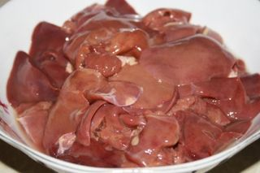
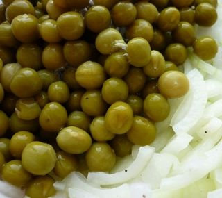
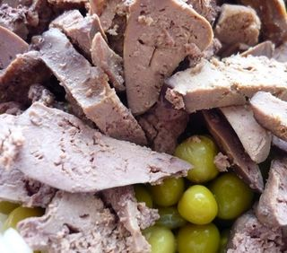
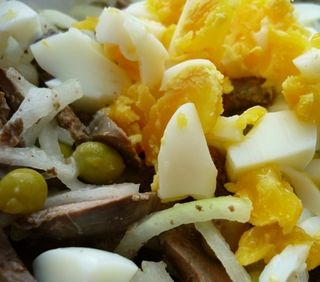

Шаг 1: Готовим салат "И печень может быть пикантной".

Первым делом необходимо поставить варить на среднем огне куриную печень. Варим в слегка подсоленной воде около 25 минут.
Так же ставим варить яйца.

В это время очищаем репчатый лук и нарезаем его тонкими полукольцами. Перекладываем в небольшую мисочку (с крышечкой), поливаем уксусом, добавляем одну чайную ложку растительного масла, солим, перчим. Закрываем крышечкой и тщательно встряхиваем. Даём ему настояться около минуты.

Открываем консервированный зелёный горошек и добавляем к луку.
Готовую куриную печень нарезаем на средние кусочки, примерно, по 2 см и выкладываем в салатницу.

Яйца очищаем и мелко нарезаем, добавляем в салат. Выкладываем в салатницу маринованный лук с горошком и приступаем к приготовлению соуса. Для этого смешиваем в мисочке горчицу с одной столовой ложкой растительного масла и 1/5 чайной ложки винного уксуса.
Заправляем салат соусом, перемешиваем и отправляем в холодильник пропитываться минут на 30.